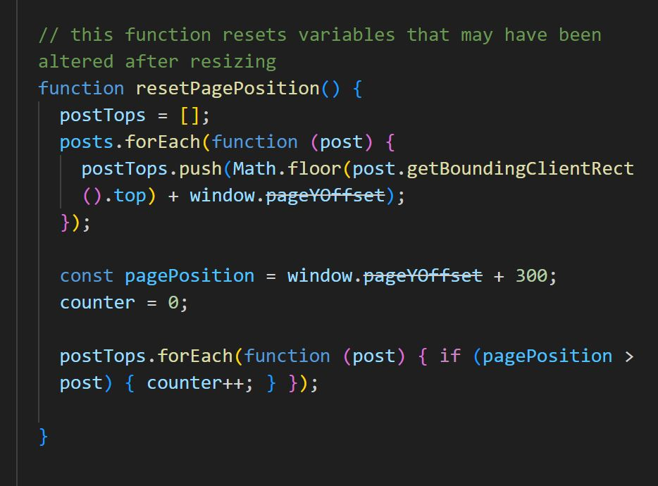
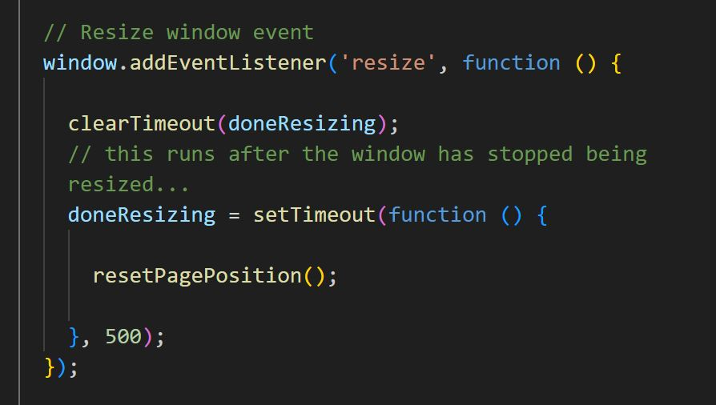

Code Report
Upon inspection and explanation of my earlier ideas detailed in my Final Brief, Emma helped me narrow down my scope. First, she recommended to use the same JS script I have been using for my page instead of making a new one because I am implementing what would be considered just a add on to an already established design since my innovation is mostly to make the web page responsive. Second, she stated that I should make figma prototype to help visualize my idea for my responsive design and third, she said to add more css animations such as easing to make the map resizing on the mobile design less intensive and more easier for the eyes.